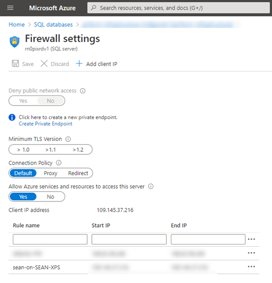

I often connect to my test SQL Azure database instance from my development machine. To allow connect to the SQL Azure database there must be a rule for your IP address to allow the connection in the SQL Azure database's firewall. When your IP changes you get an error saying that the connection could not be established.
You can always use use the Azure Portal to easily add a client IP rule at any time.

But I find it faster and less distracting to add the firewall client IP rule by running a PowerShell script on my local machine (which I set up behind some keyboard shortcuts). Here's how...
Before we can run the script, we need to install the Az and Az.Sql modules, like so:
Install-Module -Name Az -AllowClobber -Scope CurrentUser
Install-Module -Name Az.Sql -AllowClobber -Scope CurrentUserWe then need to connect to your Azure account, which is done without any pain by running this and following the prompts to log into your Azure account and authenticate your local PowerShell to connect.
Connect-AzAccountAfter you're set up, the script first creates a rule name based on your local username and computer name. For me, this will be sean-on-SEAN-XPS:
$ruleName = "$env:USERNAME-on-$env:COMPUTERNAME"Then we find our current IP address using the wonderful http://checkip.dyndns.org/, which will give us a string something like: Current IP Address: 111.222.33.444. We just split that to get the IP address:
$client = New-Object System.Net.WebClient
[xml]$response = $client.DownloadString("http://checkip.dyndns.org")
$ip = ($response.html.body -split ':')[1].Trim()There is a function called Set-ServerAccess that does the real work, calling into the Az.Sql module we loaded earlier and we remove any existing rules before adding a new one:
function Set-ServerAccess ($subscription, $resourceGroup, $server) {
$context = Get-AzSubscription -SubscriptionName $subscription
Set-AzContext $context
Remove-AzSqlServerFirewallRule -ServerName $server -ResourceGroupName $resourceGroup -FirewallRuleName $ruleName -ErrorAction SilentlyContinue
New-AzSqlServerFirewallRule -ServerName $server -ResourceGroupName $resourceGroup -FirewallRuleName $ruleName -StartIpAddress $ip -EndIpAddress $ip
}Then, we just call this for the server you want to connect to. Just add more lines like this to connect to more than one server:
Set-ServerAccess 'your subscription name' 'your resource group' 'your sql azure server name'That's it, we're connected and back working again! The full script is available from this Gist and looks like this:
$ruleName = "$env:USERNAME-on-$env:COMPUTERNAME"
$client = New-Object System.Net.WebClient
[xml]$response = $client.DownloadString("http://checkip.dyndns.org")
$ip = ($response.html.body -split ':')[1].Trim()
function Set-ServerAccess ($subscription, $resourceGroup, $server) {
"Setting access rule for server $server in subscription $subscription" | Write-Host | Out-Null
$context = Get-AzSubscription -SubscriptionName $subscription
Set-AzContext $context
Remove-AzSqlServerFirewallRule -ServerName $server -ResourceGroupName $resourceGroup -FirewallRuleName $ruleName -ErrorAction SilentlyContinue
New-AzSqlServerFirewallRule -ServerName $server -ResourceGroupName $resourceGroup -FirewallRuleName $ruleName -StartIpAddress $ip -EndIpAddress $ip
}
Set-ServerAccess 'your subscription name' 'your resource group' 'your sql azure server name'Enjoy!